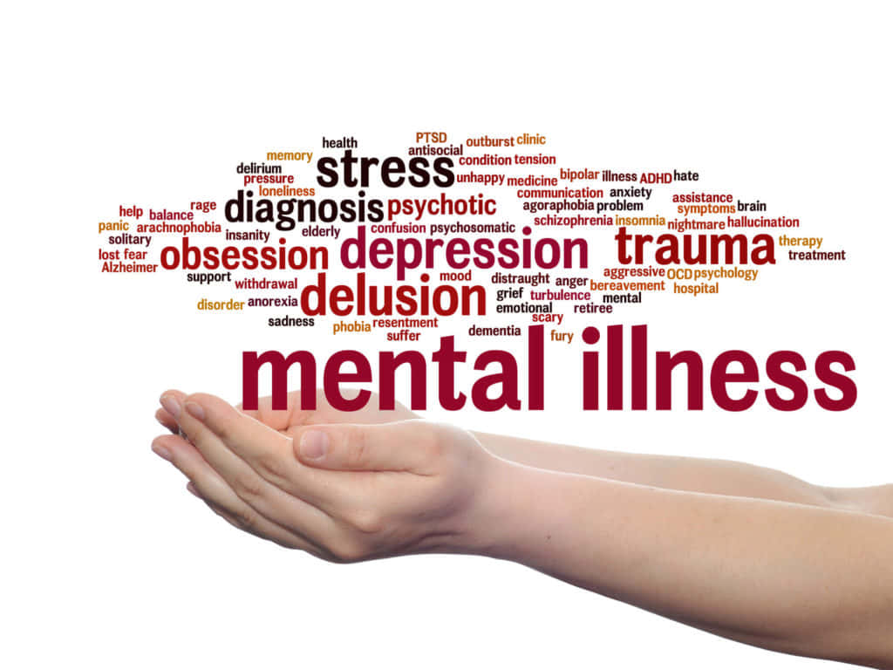

About Mental Health
Mental health is an important part of our overall wellbeing. It affects how we think, feel and behave, how we handle stress, how we relate to others and how we make decisions in our daily lives.
Everyone has mental health, just as everyone has physical health. People can experience mental health challenges at different stages of life, and these challenges should be treated with understanding, patience and compassion.
Taking care of our mental health is not a sign of weakness. Speaking up, asking for help and supporting one another are positive steps towards building healthier and stronger communities.

Ways to Take Care of Your Mental Health
Small, healthy habits can make a difference to our emotional wellbeing. Here are some ways to care for your mental health:
- Talk About Your Feelings — Share how you are feeling with someone you trust instead of keeping everything inside.
- Stay Connected — Spend time with friends, family and people who make you feel supported.
- Get Enough Rest — Maintain a healthy sleep routine and give yourself time to relax.
- Stay Active — Try walking, exercising, dancing or another activity you enjoy.
- Make Time for Yourself — Take breaks, enjoy hobbies and practise activities that help you feel calm.
- Ask for Help — Reach out to a trusted adult, counsellor, healthcare professional or support service when you need help.
Understanding Mental Health
- Mental health is important at every stage of life, from childhood and adolescence through adulthood.
- Experiencing a mental health challenge does not define a person or determine their worth.
- There is no shame in asking for help or speaking to someone about how you feel.
- Listening without judging can help someone feel heard, respected and supported.
- Kindness, understanding and support can help create a community where people feel safe discussing mental health.
Recognising When Someone May Need Support
| Possible Sign | What You May Notice | How You Can Help |
|---|---|---|
| Withdrawal | Spending less time with friends or family | Check in and let the person know you are there for them |
| Changes in mood | Seeming unusually sad, worried, angry or overwhelmed | Listen calmly and avoid judging their feelings |
| Changes in routine | Difficulty sleeping, eating or keeping up with daily activities | Encourage them to speak with a trusted person or professional |
| Feeling overwhelmed | Finding it difficult to cope with everyday stress | Offer support and help them find appropriate assistance |
If you are worried about someone's safety, take it seriously and seek help from local emergency or healthcare providers. You do not have to manage the situation alone.
Learn More and Find Support
These organisations provide information about mental health and wellbeing: